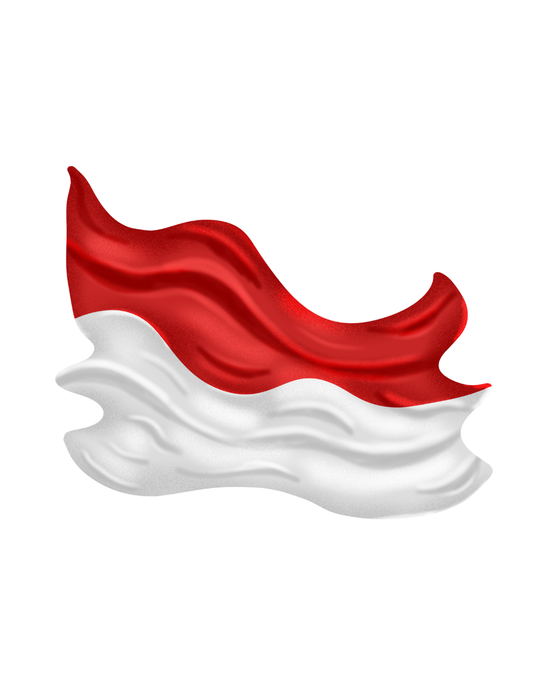

Kebersamaan
Menjaga persaudaraan dan guyub rukun antar pemuda.
Wadah kreativitas dan kebersamaan pemuda Dukuh Kriyan untuk menciptakan kegiatan positif, mempererat persaudaraan, dan ikut membangun lingkungan yang lebih baik.
Tunas Remaja Kriyan hadir sebagai ruang untuk berkumpul, bertukar ide, berkegiatan, dan memberi dampak positif bagi Dukuh Kriyan.

Kami percaya perubahan besar dimulai dari langkah kecil yang dilakukan bersama.
Menjaga persaudaraan dan guyub rukun antar pemuda.
Mendorong ide dan kegiatan positif yang bermanfaat.
Ikut hadir dan bergerak untuk lingkungan sekitar.
Dari olahraga sampai kegiatan sosial, setiap agenda menjadi kesempatan untuk berkumpul dan membuat cerita baru.
Jalan sehat dan senam bersama warga untuk menjaga kebugaran sekaligus mempererat silaturahmi.
Lihat & Download Galeri ↗Memeriahkan Hari Kemerdekaan dengan lomba seru dan kegiatan yang melibatkan warga.
Segera hadir →Berbagi kebahagiaan dan membantu sesama melalui kegiatan sosial di lingkungan sekitar.
Segera hadir →Setiap kegiatan berawal dari kebersamaan, direncanakan bersama, lalu diwujudkan menjadi pengalaman yang berkesan.
Menampung ide kreatif pemuda untuk kegiatan yang positif dan bermanfaat.
Membagi peran, mengajak warga, dan bergerak bersama sampai kegiatan terlaksana.
Menyimpan cerita kegiatan agar bisa dikenang dan menjadi inspirasi berikutnya.
Beberapa momen pilihan untuk menghidupkan suasana. Dokumentasi lengkap tersedia di galeri Google Drive.
Punya ide kegiatan, ingin berkolaborasi, atau sekadar ingin mengenal lebih dekat? Hubungi Tunas Remaja Kriyan.